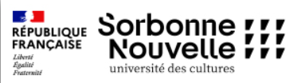

Neila O
Licence 2 des Sciences du Langage

Mon CV des trois dernières années :
année universitaire
Statut
2025-2026
L2 SDL mineur informatique
2024-2025
L1 SDL mineur informatique
2023-2024
BAC General
Voici les cinq derniers livres que j'ai lu :
1984
, Gorge Orwell
L'inhumanite
, Laurent Denave
Aberrations
, Joseh Delaney
I used to have a plan
, Alessandra Olanow
If we were villains
, M.L. Rio